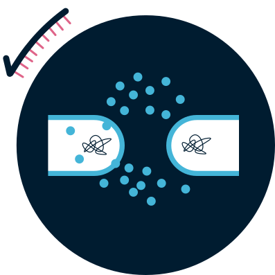
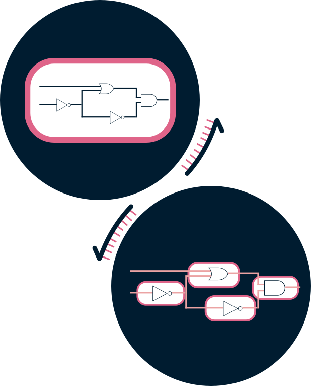
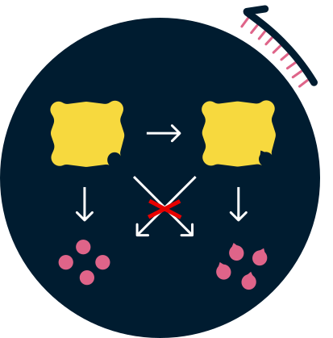

Cells communicate via quorum sensing - release of molecules that can then be picked up by other cells to change an entire community’s behaviour.
Introducing modified quorum sensing systems into an individual cell takes up a lot of that cell’s resources and makes it ‘tired’. This is cell burden. To help that cell distribute this burden, the circuit can be split across the cells.
 induceR develops a new quorum sensing protein that associates with a non-native molecule. Cells will then have both, a natural and a non-natural quorum sensing systems. It helps to reduce the cell burden.

WORKFLOW
Our general workflow was divided into 2 branches: Dry and Wet lab.
In Dry lab, we did bioinformatics analysis to understand the properties of the wild-type protein EsaR, and to simulate its functions before and after mutagenesis.
In Wet lab, we mutated quorum sensing transcription factors using directed evolution methods.
Directed Evolution applies evolution in the lab to achieve desired properties of organisms more quickly than in nature.
DRY LAB
WET LAB